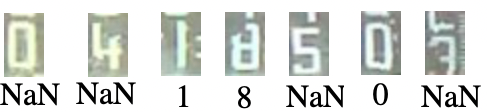
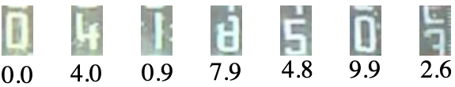
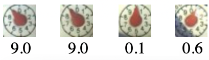

1. Model Selection
Notes
See Neural Network Types for additional details.
In the Graphical Configuration Page, you can choose different models depending on your needs.
This page tries to help you on which model to select. For more technical/deeper explanations have a look on Neural-Network-Types.
1.1 Digit Models
For digits on water meters, gas-meters or power meters you can select between two main types of models:
dig-class11dig-class100anddig-cont
class stands for classification and cont stands for continuous. The 11 means that there are 11 states (0..9 and N). The 100 indicates that the model resolves into x.1 steps by having 100 states (0.0, 0.1, 0.2, ... 9.7, 9.8, 9.9).
continuous means, that there is no discrete model, that has discreate states, but there is a different mechanism, that provides a not discrete value in the interval between [0, 1[.
1.1.1 dig-class11
This model can recognize full digits. It was the first model version. All intermediate states shown a N for not-a-number (aka. NaN). But in post process it uses older values to fill up the N values if possible.

It's possibly a good fallback, if dig-cont or dig-class100 results are not good.
Main features:
- well suited for LCD digits
- the ExtendedResolution option is not supported. (Only in conjunction with
ana-class100orana-cont)
1.1.2 dig-class100 and dig-cont
These models are used to get a continuous reading with intermediate states. To see what the models are doing, you can go to the Recognition page of your device.

Main features:
- suitable for all digit displays.
- Advantage over
dig-class11that results continue to be calculated in the transition between digits. - With the ExtendedResolution option, higher accuracy is possible by adding another digit.
The difference between dig-class100 and dig-cont is in the internal processing.
The dig-class100 is a standard classification model. Each tenth step is an output.
dig-cont uses two outputs and arctangent to get the result.
Note
Try both models on your device and take the one that gives you the best results.
Look here for a list of digit images used for the training.
1.2 Analog pointer models
For pointers on water meters use the analog models:

You can choose between two models:
ana-class100ana-cont
Both do mainly the same.
class stands for classification and cont stands for continuous.
Main features:
- for all analogue pointers, especially for water meters.
- With the ExtendedResolution option, higher accuracy is possible by adding another digit.
Again, the difference between ana-class100 and ana-cont is in the internal processing.
Note
Take the one that gives you the best results. Both models learn from the same data.
Look here for a list of pointer images used for the training
1.3 Different types of models (normal vs. quantized)
The normally trained network is calculating with internal floating point numbers. The saving of floating point numbers naturally takes more space than an integer type. Often the increased accuracy is not needed. Therefore there is the option, to "quantize" a neural network. In this case the internal values are rescaled to integer values, which is called "quantization". The stored tflite files are usually much smaller and runs faster on the edgeAI-device.
Usually the models are distrusted therefore in both versions. They can be distinguished by a q at the end of the logfile.
Example:
| Type | Name |
|---|---|
| Normal | dig-cont_0610_s3.tflite |
| Quantized | dig-cont_0610_s3-q.tflite |
1.4 Model Naming Convention
Model filenames follow a specific structure composed of several parts:
- Model Type: Indicates the kind of model, such as
ana/dig,cont,class11, orclass100. - Version Number: Denotes the version of the model.
- Size Indicator: Represents the size or complexity of the model.
- Quantization Indicator (optional): Specifies whether the model was quantized after training.
- File Type: Always
.tflite.
1.4.1 Version Number
The version number consists of four digits:
- The first two digits represent the main version.
- The last two digits represent the sub-version.
Example:
0610 → Main version: 06, Sub-version: 10
In general, higher numbers correspond to newer models.
1.4.2 Size Indicator
- The size indicator typically starts with
sfollowed by a number, e.g.,s3. - This naming is not strictly standardized yet.
- Training usually begins with a larger model (
s0), and successive versions (s1,s2, ...) reduce the number of parameters to create smaller, faster networks. - Reducing model size can improve efficiency, but may eventually lead to a drop in recognition accuracy.
- In newer model generations, only the best-performing sizes are retained and further trained.
1.4.3 Quantization Indicator
- If the model name ends with
-q, it indicates that quantization was applied after training. - Quantization significantly reduces the model size, typically without a noticeable impact on recognition performance.